We tell the stories behind the work that NGOs, development organisations, and brands do across the region. We work in English and French.
Most of our work falls into three areas.
Editorial, portrait, and documentary photography, shot on location across Ghana and the region.
Long-form, character-driven films that follow people through the work they're actually doing.
Brand films, conference coverage, campaign content, and short-form video.
A selection of recent projects. Drag or scroll to explore — click any card to view the full gallery.
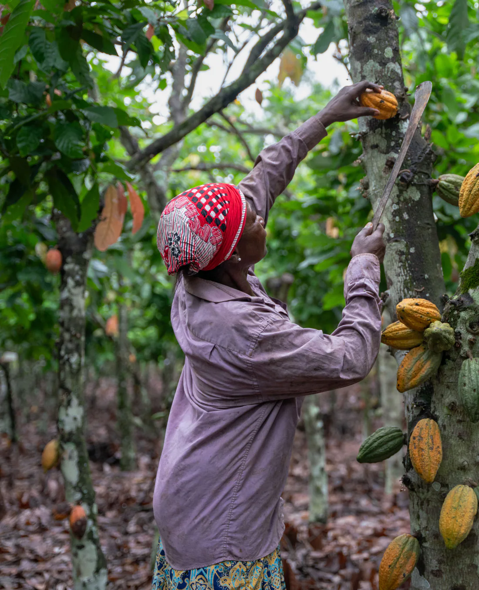
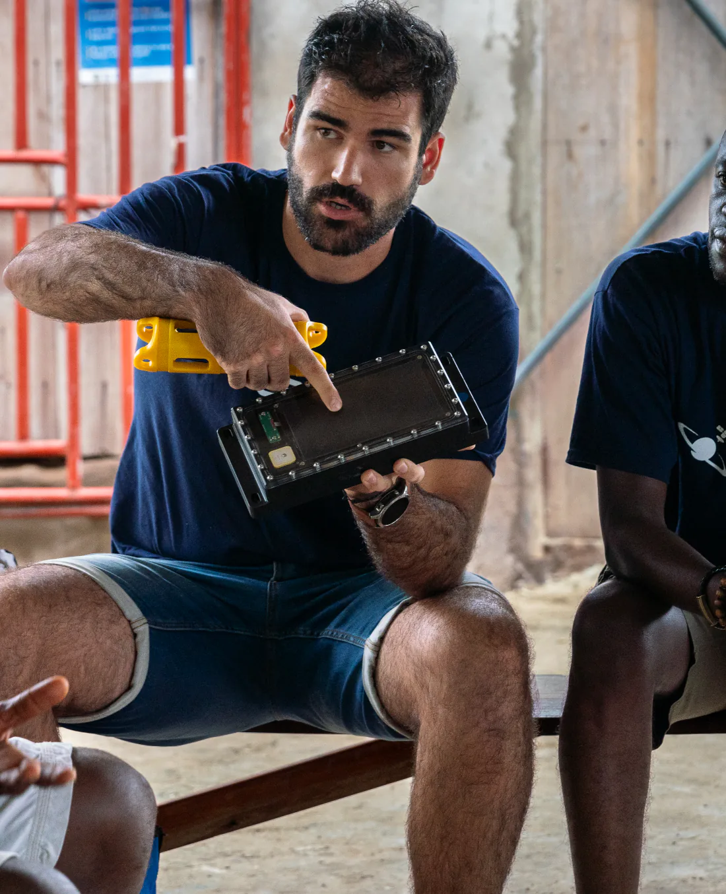
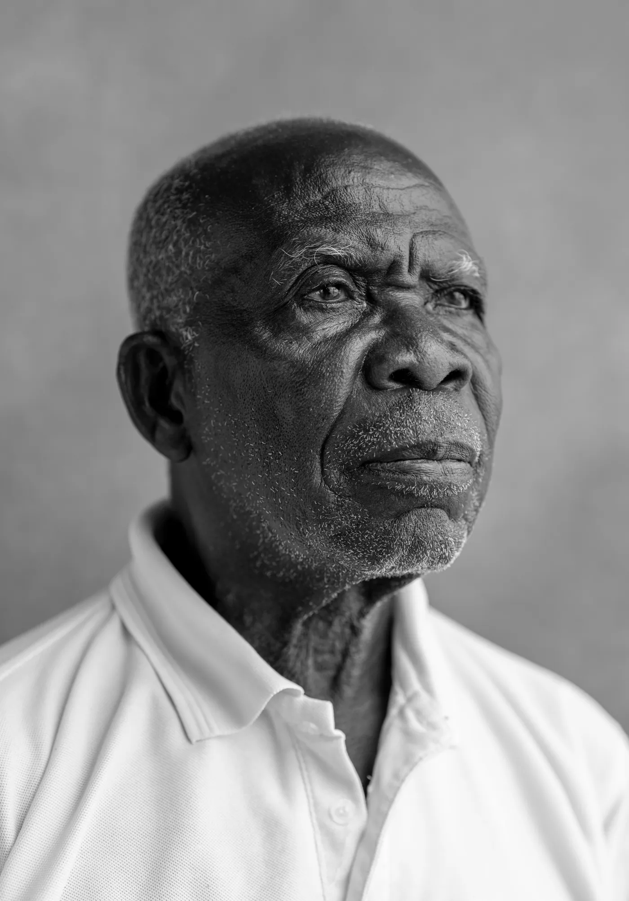
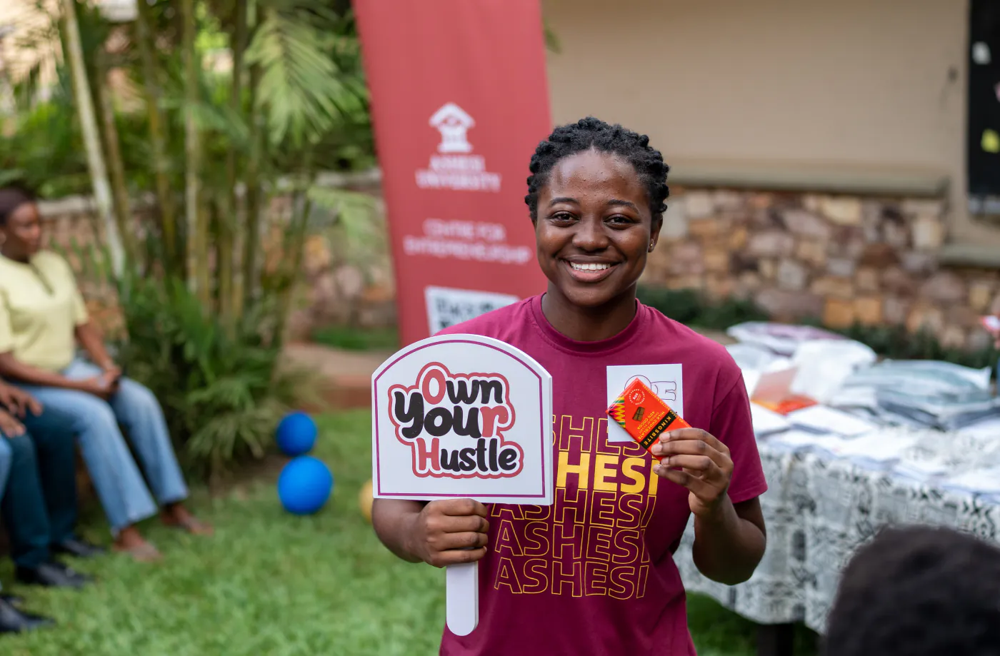
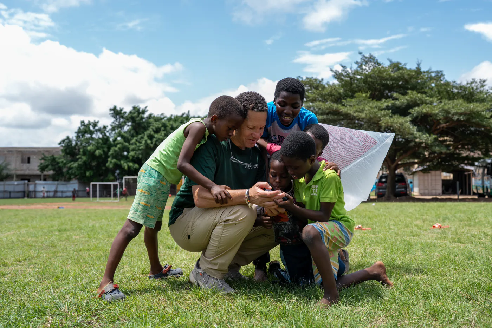
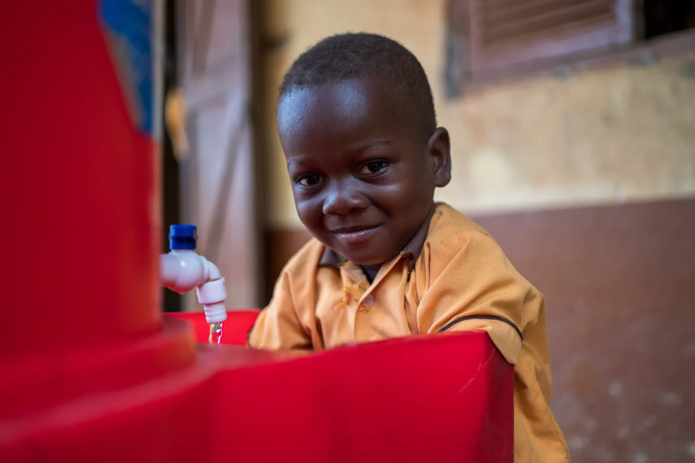
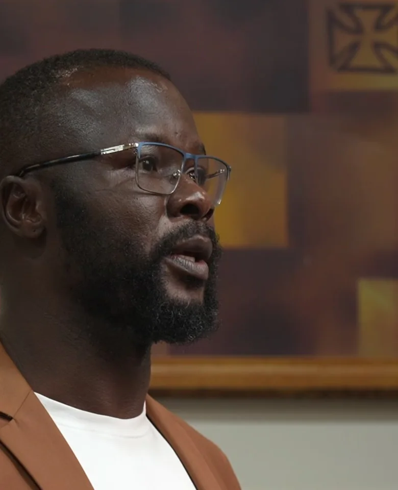
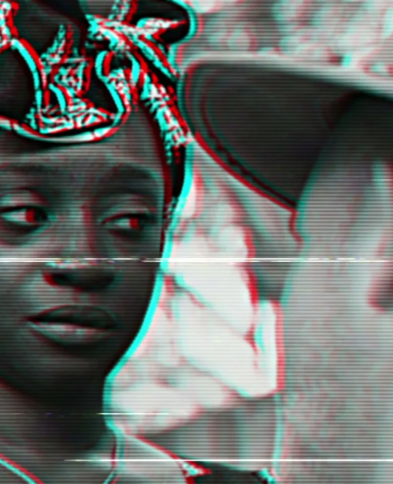
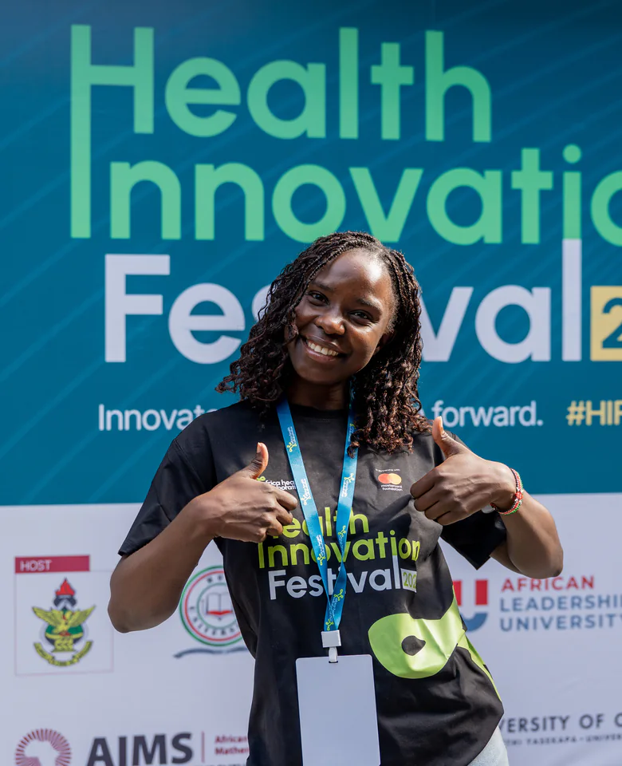
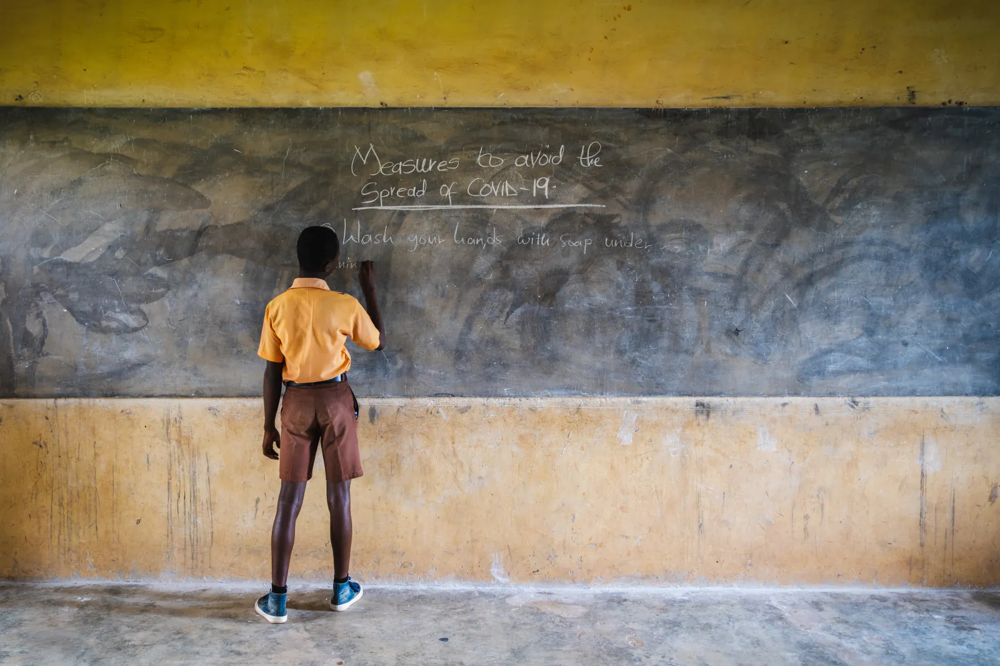
We make documentary films and photographs for organisations doing real work on the ground — the kind of footage that shows a funder, or a community, exactly what happened and why it mattered.
We've filmed across Ghana, Burkina Faso, Côte d'Ivoire, Sierra Leone, and Togo, and we work in both English and French. Most of our clients are NGOs, development organisations, and institutions, so we're used to working carefully around the people and stories we're trusted with.
From the first conversation to the final files.
We start by listening. What are you trying to show, and who actually needs to see it?
We scout locations, line up the people we need to film, and sort out consent before anyone picks up a camera.
We shoot on location, usually over a few days, and we take our time with the people we're filming.
We edit, colour-grade, and hand over files that are ready to use, whatever the format you need.
We film with consent and care. Every project follows informed-consent and child-safeguarding practices, protects the dignity and privacy of the people we work with, and handles all footage and data securely, to the standards our NGO and institutional partners require.
A few of the organisations we've worked with.
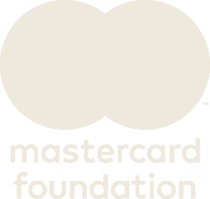
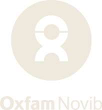
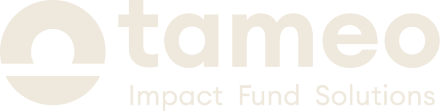
A brand film, a documentary, a photo assignment? Send us a note about what you have in mind and we'll reply within two business days.
info@engmanwulff.com →